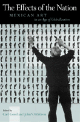

How are national identity and the arts intertwined?
How are national identity and the arts intertwined?


 How are national identity and the arts intertwined?
How are national identity and the arts intertwined?

|  |
The Effects of the NationMexican Art in an Age of Globalizationedited by Carl Good and John V. Waldronpaper EAN: 978-1-56639-866-4 (ISBN: 1-56639-866-5) |
"Broad enough to appeal to a wide audience of Mexicanists, while at the same time focused around a specific set of issues, The Effects of the Nation is a strong collection of essays, both well-conceived and well written. The dual focus on literature and visual art strengthens the book by suggesting connections among various Mexican intellectual circles and the cultural industries. The result should appeal to both literary scholars and art historians."
—Claire Fox, author of The Fence and the River: Culture and Politics at the U.S.-Mexican Border
What is the effect of a "nation"? In this age of globalization, is it dead, dying, only dormant? The essays in this groundbreaking volume use the arts in Mexico to move beyond the national and the global to look at the activity of a community continually re-creating itself within and beyond its own borders.
Mexico is a particularly apt focus, partly because of the vitality of its culture, partly because of its changing political identity, and partly because of the impact of borders and borderlessness on its national character. The ten essays collected here look at a wide range of aesthetic productions—especially literature and the visual arts—that give context to how art and society interact.
Steering a careful course between the nostalgia of nationalism and the insensitivity of globalism, these essays examine modernism and postmodernism in the Mexican setting. Individually, they explore the incorporation of historical icons, of vanguardism, and of international influence. From Diego Rivera to Elena Garro, from the Tlateloco massacre to the Chiapas rebellion, from mass-market fiction to the film Aliens, the contributors view the many sides of Mexican life as relevant to the creation of a constantly shifting national culture. Taken together, the essays look both backward and forward at the evolving effect of the Mexican nation.
Excerpt available at www.temple.edu/tempress
"The diversity of these essays reveals an interlocking strength built upon a common thematic, without coming across individually as narrowly construed or atomized. There is a wonderful overlap as well as tension between the essays, notably in the ways that the authors approach the question of representation and power in the Mexican national (and transnational) space. The publication of this collection will come at a fortuitous moment, when academic interest in Mexican studies is breaking free of earlier agendas."
—Eric Zolov, Assistant Professor of Latin American History at Franklin and Marshall College and author of Refried Elvis: The Rise of the Mexican Counterculture
"The essays in this book use the arts in Mexico to move away from the national and the global, to look at the activity of a community continually recreating itself within and beyond its own borders. The essays examine a wide range of aesthetic productions—especially literature and the visual arts—that give context to how art and society interact."
—Hispanic Outlook
Read a review from Hispanic American Historical Review, August 2003, written by Adriana Zavala (pdf).
Introduction: Ungoverned Specificities – Carl Good
1. Mexican Art on Display – Olivier Debroise
2. Mathias Goeritz: Emotional Architecture and Creating a Mexican National Art – Juan Bruce-Novoa
3. Corporeal Identities in Mexican Art: Modern and Postmodern Strategies – Karen Cordero Reiman
4. Elena Poniatowska’s Querido Diego, te abraza Quiela: A Revision of Her Story – Susan C. Schaffer
5. "Un octubre manchado se detiene": Memory and Testimony in the Poetry of David Huerta – Jacobo Sefamí
6. Aesthetic Criteria and the Literary Market in Mexico: The Changing Shape of Quality, 1982-1994 – Danny J. Anderson
7. Un hogar insólito: Elena Garro and Mexican Literary Culture – Rebecca E. Biron
8. René Derouin: Dialogues with Mexico – Montserrat Galí Boadella
9. Unhomely Feminine: Rosina Conde – Debra A. Castillo
10. The Postmodern Hybrid: Do Aliens Dream of Alien Sheep? – Rolando Romero
About the Contributors
Index
 | Carl Good is Assistant Professor of Spanish at Emory University. |
John V. Waldron is an independent scholar living in Connecticut.
Contributors: Danny J. Anderson, Rebecca E. Biron, Bruce-Novoa, Debra A. Castillo, Karen Cordero Reiman, Olivier Debroise, Montserrat Galí Boadella, Rolando Romero, Susan C. Schaffer, Jacobo Sefamí, and the editors. Danny J. Anderson, Rebecca E. Biron, Bruce-Novoa, Debra A. Castillo, Karen Cordero Reiman, Olivier Debroise, Montserrat Galí Boadella, Rolando Romero, Susan C. Schaffer, Jacobo Sefamí, and the editors.
Literature and Drama
Art and Photography
Latin American/Caribbean Studies
© 2015 Temple University. All Rights Reserved. This page: http://www.temple.edu/tempress/titles/1479_reg.html.